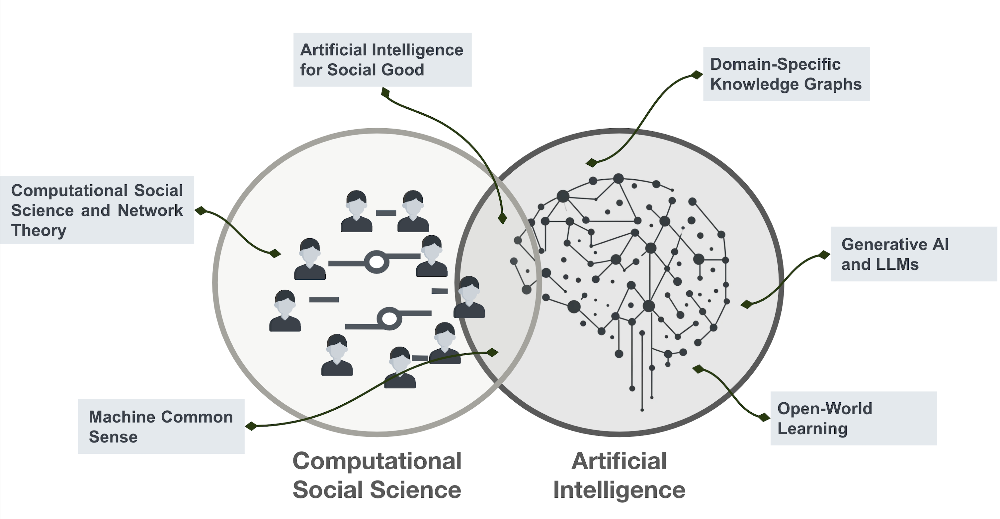

AICS conducts interdisciplinary research at the frontier of AI and complex systems, in domains ranging from healthcare and e-commerce to social good applications like fighting human trafficking. We develop AI systems that perform well, while still being robust and trustworthy, by combining the best of knowledge representation research (such as knowledge graphs, ontologies, and symbolic reasoning) with more recent large language models (LLMs). Our fundamental AI research in open-world learning and common sense reasoning are important elements in eventually building an artificial general intelligence (AGI). We also use AI and systems engineering for computational social science. Our work in complex systems has been used to study illicit financial networks, model political campaign finance dynamics, and better understand policy impacts during COVID-19. Our work has been published and presented across almost a hundred peer-reviewed venues and broadly covered in scientific press.
